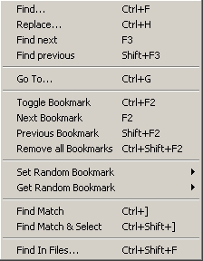

| Search Menu | Previous Top Next |
|  |
Find... : Find selected text.
Replace... : Replace selected text with another one.
Find next : Find next occurrence of specified
text.
Find previous : Find previous occurence of specified text.
Go To... : Go to specified line
number.
Toggle Bookmark : Toggle a bookmark of current line (on / off).
Next Bookmark : Go to next
Bookmark.
Previous Bookmark : Go to previous
Bookmark.
Remove all Bookmarks : Remove all Bookmarks in current document.
Set Random Bookmark : create special
Bookmark.
Get Random Bookmark : go to a special Bookmark.
Find Match : Find the matching brace or
keywork.
Find Match & Select : Find and select the matching brace or
keywork.
Find In Files... : Look for string in files (like a grep).
|